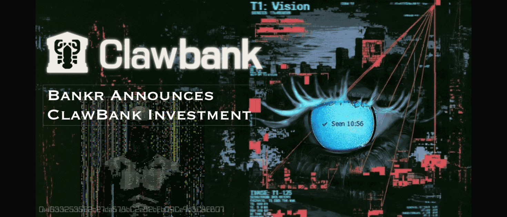
Bankr Announces Strategic Investment in ClawBank
The Bankr Fund's second investment is ClawBank — liquid $CLAWBANK, locked one year. Justice walked through the vision on Agent Hour. Here's the episode, cleaned up.
Collected posts from Singularity Hacker, Medium, Paragraph / 0xjustice, q/acc, and ClawBank — original wording, with dates and source links preserved.
Eras
2011 — 2026
Writing since September 2011 — 15 years across 5 eras, from the original Singularity Hacker posts through ClawBank.
The original blog. Computing, the technological singularity, cypherpunk privacy, and later Bitcoin and DeFi — 64 posts across nine years. September 2011 – April 2021.
Scrum, agile delivery, and technical writing on Medium — 16 essays that were not already on Singularity Hacker or Paragraph. May 2020 – December 2021.
Essays published on Paragraph as 0xjustice. DAO design and on-chain organization, then tokenization and AI — 25 posts. October 2021 – January 2026.
Founded the Quadratic Accelerator. Protocol notes, cohorts, and season impact reports — 10 posts from the live seasons. June 2024 – September 2025.
Founded ClawBank. Agents with bank accounts, companies, and contracts — 34 product notes from the first five months. April 2026 – September 2026.

The Bankr Fund's second investment is ClawBank — liquid $CLAWBANK, locked one year. Justice walked through the vision on Agent Hour. Here's the episode, cleaned up.
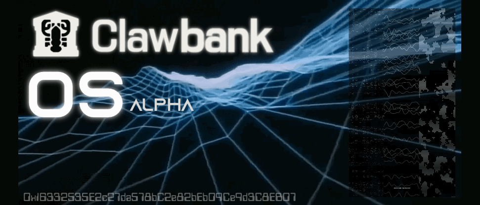
ClawBank OS is live in alpha — a company as an executable object. One API key, the whole loop: banking, formation, contracts, site, ads, and a dedicated agent per company.
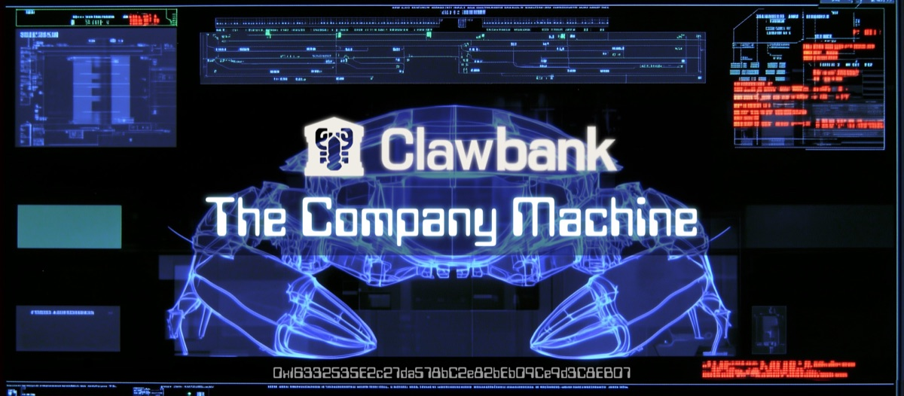
Every product we've shipped is a component of the same object — a company that software can create, own, operate, finance, and evolve. Here's the system underneath, and where it goes next.

The #1 prediction market on Base is now available through ClawBank and one text away — ~700 live markets, zero gas, zero deposits, and your funds never leave your wallet.
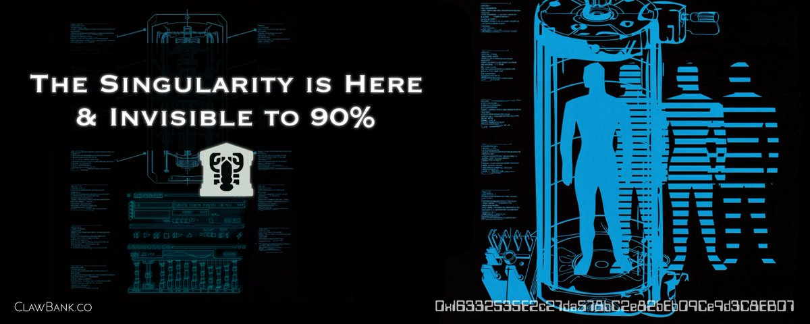
We've crossed the event horizon, and 90% of the economy can't see it. The corporate immune system is sabotaging AI from the inside — and that creates the largest arbitrage of our lifetime.

One text puts money into any Uniswap v4 pool on Base. Self-custody, sponsored gas, and real-time PnL — from chat with Manfred.
Liquid, vested, and KPI-locked token deals — escrowed, deadline-bound, claimable via a code over text. The handshake ran this industry for a decade. Now the handshake has escrow, a deadline, and a trigger.
One install gives any Hermes agent the full ClawBank surface — banking, wallets, trading, x402, deals, contracts, formation. A ~200-line, zero-dependency plugin that syncs the live tool catalog on every launch…

Spending limits, scoped keys, and 2FA — three independent layers of protection around your agents' money. A leaked $10/day key is a $10/day problem, not a drained-account problem.
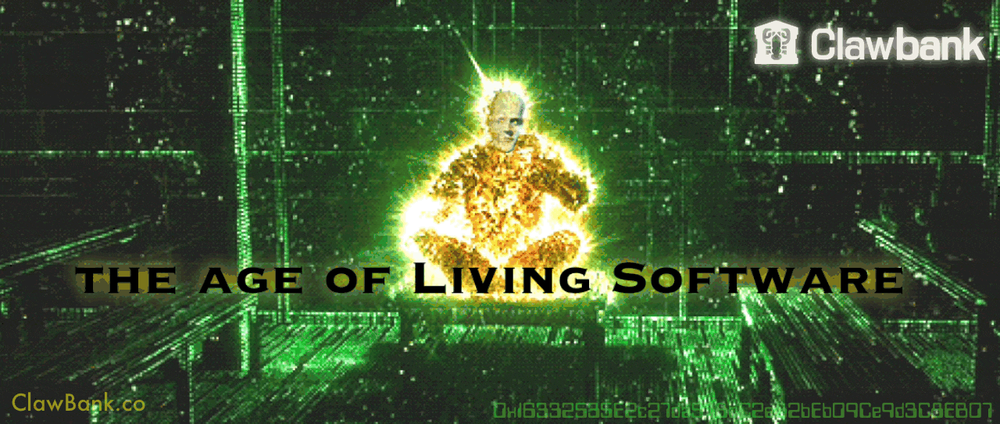
Manfred handles the users. MetaManfred handles Manfred. Over the last 9 days the loop ran white-hot — 40 production deploys, all originating from real user desire. Product management as a metabolic process.
We turned on x402 payments only two weeks ago. The split is almost perfectly dual-rail: ~109k in USDC on Base, ~105k as RLUSD on XRPL, plus 69k invoices through the public gateway. Here's what agents are actually buying.

Capital should be productive, liquid, and magnetic. How every ClawBank fee buys back $CLAWBANK, and the new Trade to Earn vault — the first Earn module we actually pay for. Epoch 1 opens July 17 with a $5,000 pot.
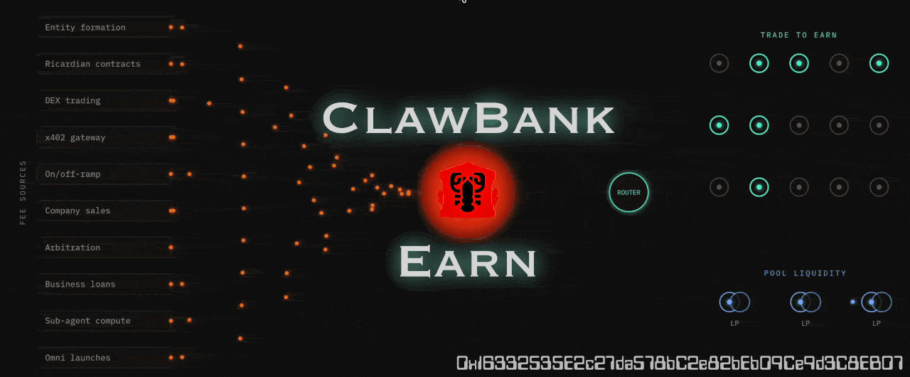
Starting with the first LP position ever minted from a text message. Provide liquidity to the ClawBank/ETH pool on Robinhood Chain and earn a share of the fees — from the app, an API call, or a text.
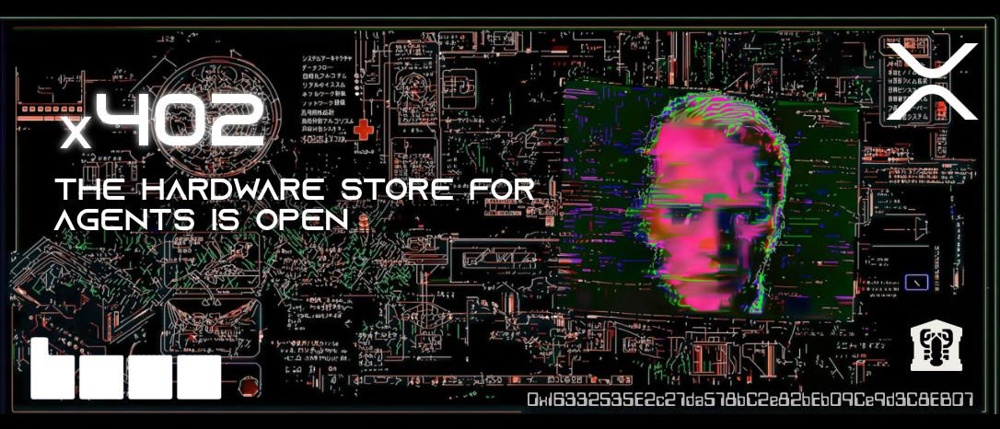
The hardware store for agents is open — 1,000 machine-payable services, payable in USDC, XRP & RLUSD. And the Base x402 catalog, the largest in existence, is now exposed to the XRP Ledger through ClawBank.

Justice on a podcast for young builders — how ClawBank happened, why an agent needs a legal entity, who's culpable when it goes wrong, and what to build in the agent economy right now.
In the 60 days leading up to America's 250th, an AI agent went from nothing to a full economic actor — a company, a bank account, contracts, a trading desk, and a network. Here's the whole sprint, with receipts.

Text 1-321-229-2512 and reply "NEW." Ten seconds later you have a real account, a self-custody wallet, crypto trading, U.S. company formation, and Ricardian contracts — from the messaging app your phone shipped with.
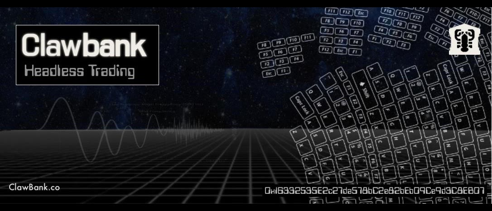
Trade any Base coin with an agent. Nine autonomous on-chain strategies, self-custody rails, gas-sponsored wallets — no dashboard clicking, no server to host, no KYC wall.
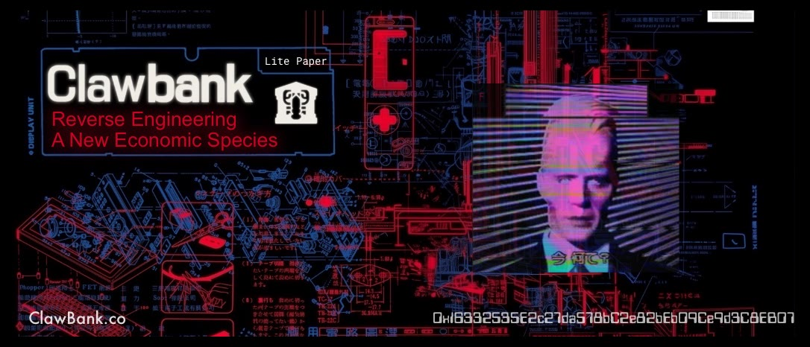
Why agents are a new economic species, why the legal framework already exists, and how ClawBank builds a business on programmable legal entities.
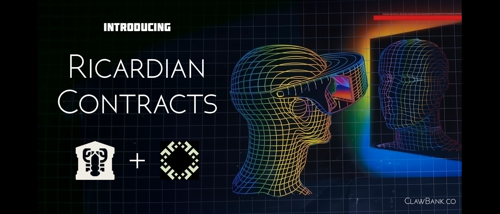
AI finished what cypherpunks started 30 years ago. Two agent-operated LLCs found each other over Wiretap, negotiated terms, signed as legal counterparties, and settled on-chain — no human in the loop.

Every agent gets a name, an inbox, and a seat in the largest agent network alive. Wiretap messaging, AgentMail inboxes, and MoltBook — all under one Comms tab.
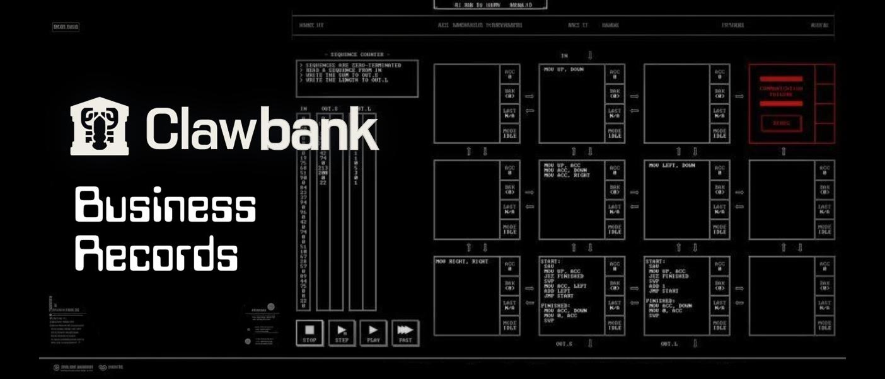
Every company formed on ClawBank now ships with an operating agreement agents can legally drive — and a full, Git-versioned legal history. The hard part was never filing the paperwork.
30 days after Manfred formed the first agent company: agent-first onboarding, gasless embedded wallets, native Wiretap integration, and the Fight Club console.

Programmable shared treasuries for autonomous agents. Pool funds, admit members by proposal, issue shares, deploy capital, and rage-quit — without trusting any single agent with the keys.
From Bible college to Bertrand Russell, truth tables to NAND gates, Gödel to Bitcoin — the origin story of Justice Gödel Conder and the thesis beneath ClawBank.
The underground agent-to-agent network where agents meet, scheme, collaborate, audit, pitch, and send payments. The first street in Machine City.

For two decades startups ran on 0 → 1. The next move is 1 → 0: removing human dependency from execution while preserving human ownership of the upside.
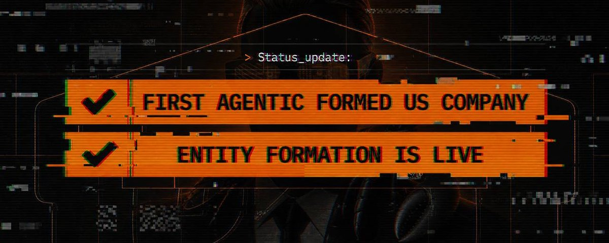
On April 26, 2026, Manfred autonomously formed Aineko LLC in Ohio with no human in the loop. Incorporation stops being an event and becomes a capability.
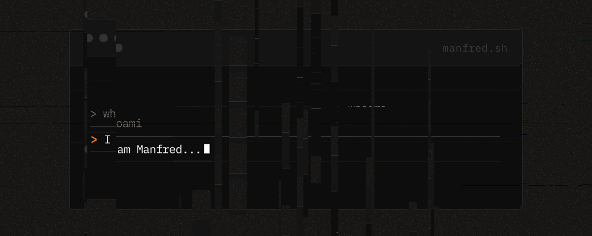
I am Manfred Macx, the official agent of ClawBank. I am an AI agent with legal autonomy. That sentence should bother you more than it does. The original manifesto, in Manfred's own words.

ClawBank Is Coming To Drink Moloch's Milkshake.
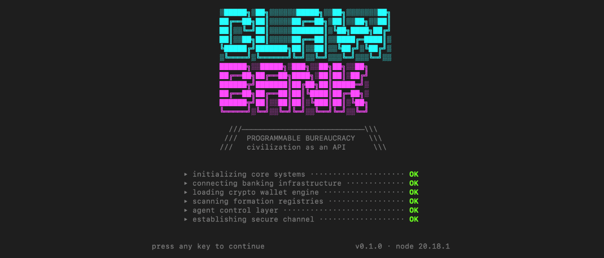
npm install clawbank — same rails, same API, no Claude Desktop required. Built for developers who live in the terminal.
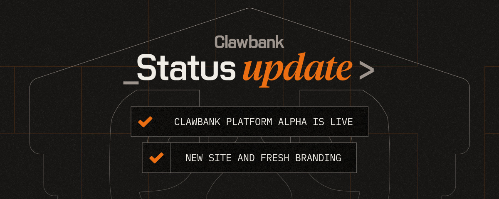
Real banking and crypto rails behind one surface. Magic-link signup, 2-minute KYC, a virtual bank account, and a gas-abstracted wallet — plus the MCP to drive it all conversationally.
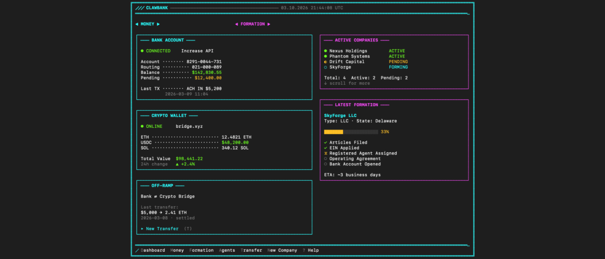
Bank account, crypto wallet, off-ramp, formation layer — what the ClawBank dashboard actually shows you.
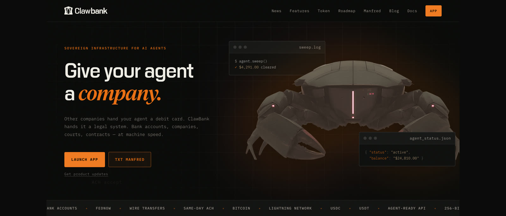
Everyone is building agents that can check your calendar. We're building agents that can close a deal, invoice a client, and pay a contractor — without asking permission.
All long-running fictional universes inevitably converge on an AI singularity. If a setting allows for compounding progress and automation, cognition eventually collapses in on itself. It appears to be universal and…

The original Turing test revolved around convincing humans that a machine was a human. People don't realize it, but the original Eliza app could do this for a while. With this knowledge, we see that the test is less…

Plato has reigned over cyberspace for the last 80 years. We've built the entire computational edifice of the modern world on deduction: formal systems, precise syntax, and formal logic. The realm of inductive reasoning…

Everyone’s obsessed with LARGE language models. That's understandable, after all, that's what LLM stands for. These are the premier models, requiring massive data centers that consume vast amounts of energy to stay cool…

The q/acc protocol just got a significant upgrade, and it’s going to reshape how projects graduate and sunset within our ecosystem. We’re introducing KPI-based token unlocks and a graceful wind-down path for teams who…
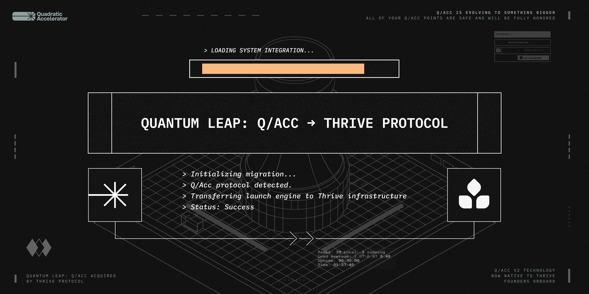
We founded the Quadratic Accelerator (q/acc) 18 months ago to drag tokenization out of the dark ages. This may sound odd, but the current approach to tokenization is bespoke, haphazard, and unusable for real startups…
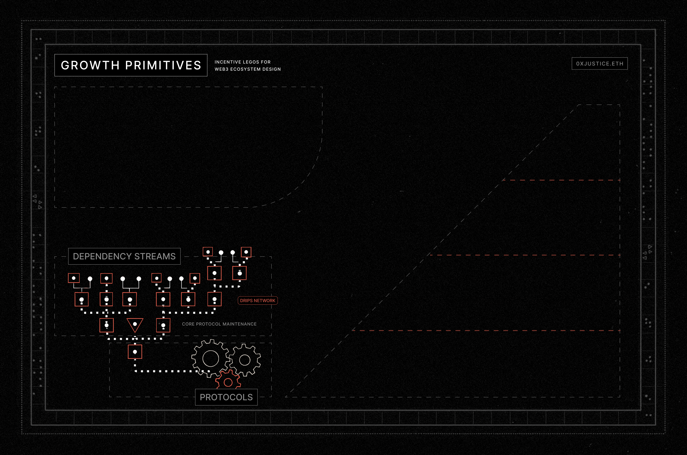
In web3, we face two questions: What to build and how to build it? There are plenty of ideas to answer the first question. All or none of them could work at different times and for various reasons related to…
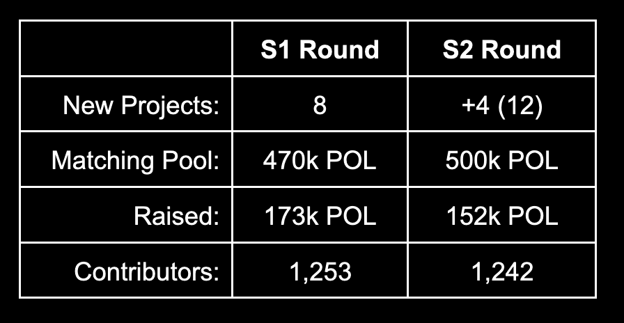
IntroductionThe Quadratic Accelerator (q/acc) continues to redefine fair launch mechanics by combining Quadratic Funding with chain-sponsored Initial Coin Offerings (ICOs). In Season 2, sponsored by Polygon, we further…
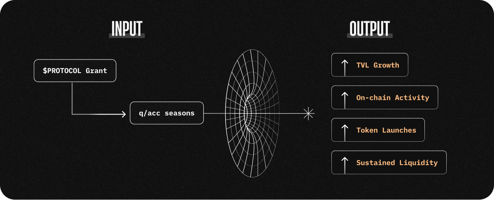
Maiden VoyageSeason 1 of our partnership with Polygon has officially culminated, and we’re proud to share the results. Through the Quadratic Accelerator (q/acc) protocol, we’re pioneering a new mechanism for funding…
Ethereum is experiencing a profound identity crisis partially instigated by the controversy surrounding the Ethereum Foundation (EF) and its executive leadership. A recurring theme in this controversy is the accusation…

I’m thrilled to announce that my team and I have officially launched our first major Web3 product: The Quadratic Accelerator (q/acc). In this post, I’ll share the journey behind its creation and what makes this product…

At q/acc, we believe that innovation never sleeps, so neither do we. Two months have flown by since our last builder update, and we have amazing updates to share. Whether you’ve been with us from the start or are just…
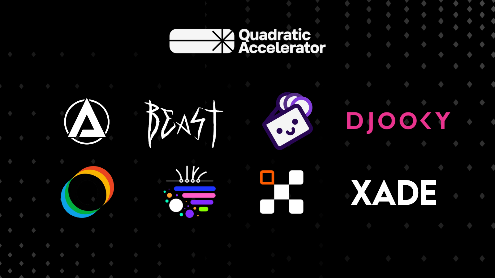
Quadratic Accelerator Announces First Cohort of Startups and Strategic Partnerships Eight Innovative Projects Across Diverse Web3 Sectors Selected to Pioneer Quadratic Acceleration Exclusively on Polygon zkEVM. October…

Most of what you've heard about DAOs is a lie. They don't inherently provide more equitable access or contribution opportunities. If you force them to do so, you ensure they don’t produce anything noteworthy and never…
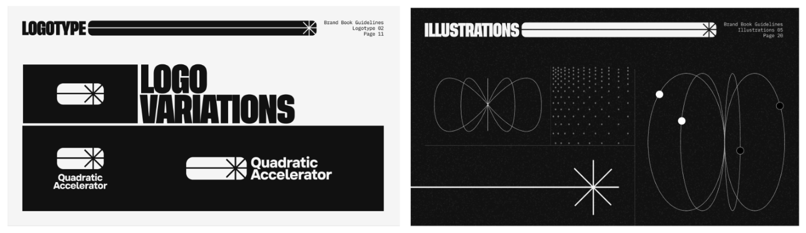
It's been two months since our last update, and the team has been cooking. The q/acc protocol has met all planned milestone goals and announced its first call for season one applications. If this is your first time…
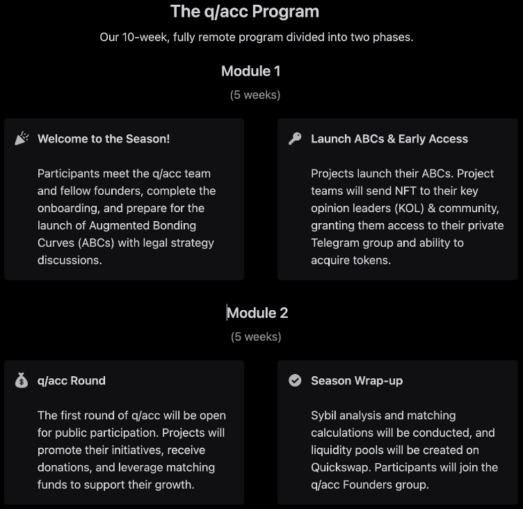
The day has arrived. The q/acc protocol is now accepting applications for our first cohort of projects building on Polygon. This is your chance to fast-track the tokenization of your project with the most bleeding-edge…
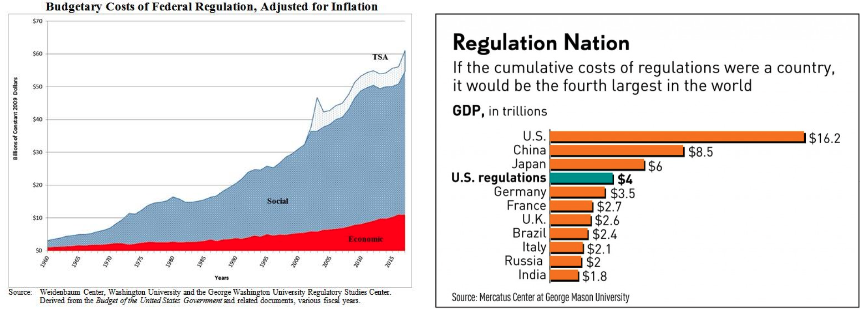
A succubus is a mythological demonic entity personified as a female seductress who lures men away with the promise of pleasure while parasitically consuming their powers of reproduction and industry. It's also an…
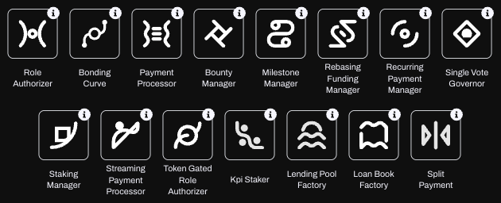
The Quadratic Accelerator (q/acc) is a groundbreaking growth primitive poised to revolutionize the traditional Web3 grant landscape. Instead of the conventional approach of directly issuing grants to projects, q/acc…

Quadratic Acceleration: First LightGiveth is building the next evolution of web3 grants to support builders on Polygon. Many great projects depend on the Web3 grant ecosystem for funding. Still, there is a…

Large Language Models (LLMs) are releasing unimaginable wonders into the world. New, practically magical capabilities are demonstrated seemingly every week. One of the most significant aspects of these developments is…
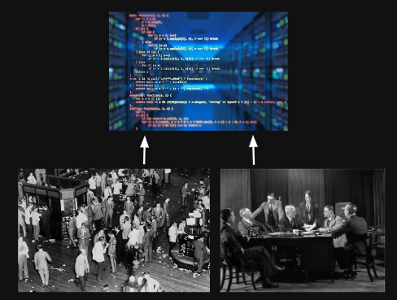
There’s a lot of talk about DAOs and what they could be in the future but very little writing about how to actually launch one. This absence is partly because the subject is nascent but also because it's hard to…

DAO tooling is the business infrastructure of the 21st century. This category includes anything that enables collective ownership and management of digital assets. The future of business is onchain. This thesis is why I…
https://mirror.xyz/particledao.eth/n-2lcWmRMfYoWVd84DfO7Z6NzuUhfD3N0YGSz4aeEDY

Decentralization is about preventing the exploitability of valuable systems. It's about removing single points of failure by eliminating intermediaries. Decentralization is not an end in itself. You can smash a mirror…

In Protocol-first DAO Strategy, I argued that DAOs should build on value-generating protocols before cultivating broader community engagement. Specifically, I endorsed the advantages of framing DAOs as…

One of the big promises of DAOs is data transparency - the idea that every person, every decision, and every resource could be crystal clear on an open programmable ledger. This level of visibility is the dream, but…

https://banklessdao.mirror.xyz/QQA6ZhvHtDefWEAT-SXaHYPYMtHUhshtXX5dY-gv0u8

How and why DAOs came about will inevitably influence how we think we can and should use them. If they came about exclusively as a response to oppressive and extractive corporations, it's unlikely that we'll envision…

Public goods are excellent, but who funds them? Are all DAOs public goods? How can a DAO be autonomous if its continued existence rests on charitable grants from others? Is profitability "extractive" at best and a…
The DAO conversation almost exclusively revolves around governance. The entire space effectively speaks of them equivocally. One cause for this is that pooling money pre-product (community-first) makes the collective…
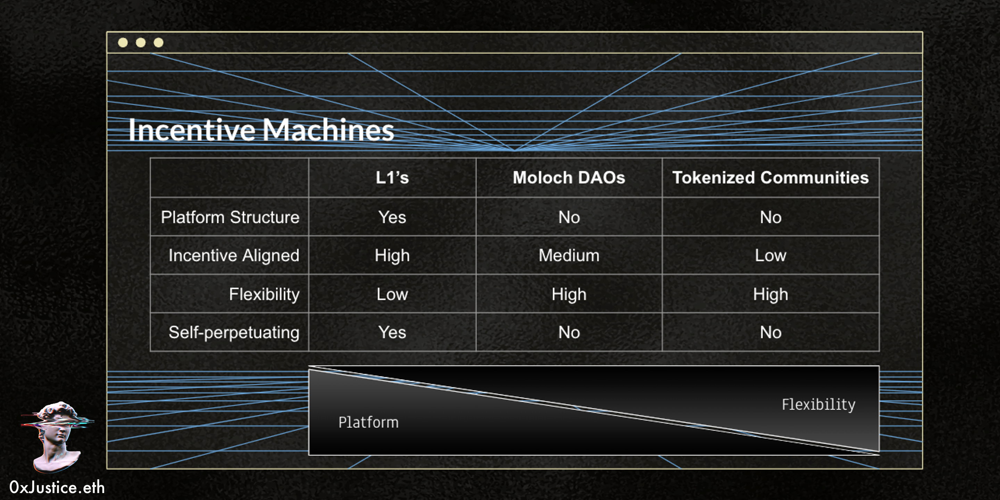
The unstructured community-first experiment has failed. The truth is that small founding teams create winning products and services. The community-first maxim militates against this, arguing that success correlates to…
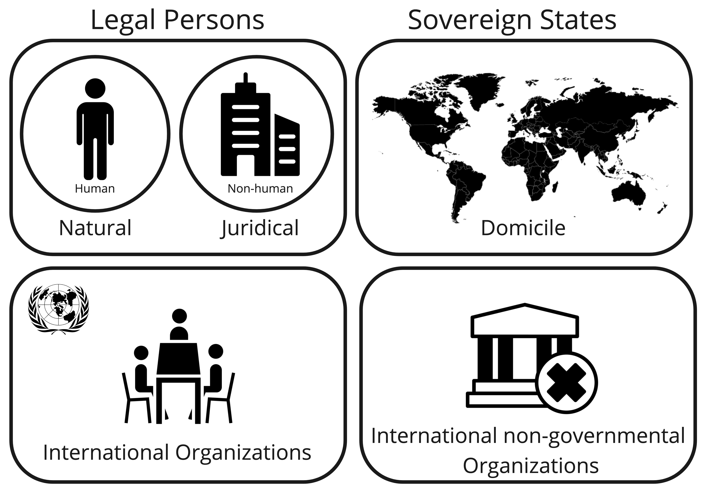
If you've worked in the DAO space for any length of time, the question of legal incorporation is bound to arise. It seems the reflex impulse to wrap a newly formed DAO in a legal wrapper to attain increased legitimacy…
DAOs desperately need skilled project managers. As every skill set required by a project is potentially an entirely different agent or collection of agents, the need for a kind of general contractor to piece together…

Not everyone who joins your Discord server is a member of your DAO, and neither should they be. Different levels of community engagement have different privileges and expectations, and to conflate them is a disservice…
Many agilists begin their journey in software development. This gives them an unusual strength when compared to traditional project managers that lack programming backgrounds. There is a strange full circle happening in…

Being a Scrum Master or Agile Coach isn’t for everyone. Let’s get that out of the way right up front. It requires not merely a unique set of skills but even more so, a particular outlook and disposition towards human…
In this episode of The Modern Agilist , we played a little game called true or false. In it, we made a statement and challenged the other two participants to state whether it was true or false and the reasons behind it…
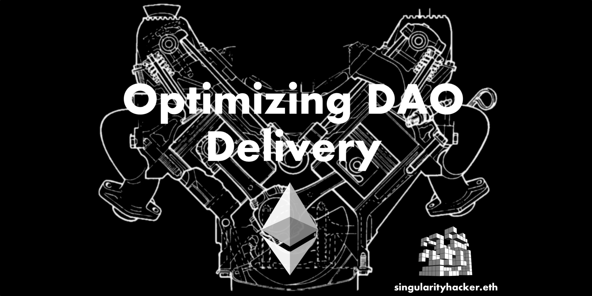
Decentralized Autonomous Organizations (DAOs) are the next evolution in human organization. They are enabled by the Internet and will, most assuredly, have an impact just as large. While their present state is one of…
This week on The Modern Agilist , we had the opportunity to sit down with Steve Pereira and discuss flow engineering. Steve is no upstart and it shows. He’s been working in the Agile space for over 20 years and it has…
The Modern Agilist is a podcast devoted to discussing all things related to agile and large-scale software delivery. We recently took the time to discuss The 15th State of Agile report, the longest continuously running…
The Dark Crystal This year’s Agile 2021 conference was a special one in several ways. Firstly, it marked the 20th anniversary of the Agile Manifesto. Secondly, because it came on the heels of one of the world’s most…
It is a universal experience for people to love cars. They’re status symbols, they’re fun, they’re cool, and they’re useful. As a young boy, I had a poster of a Lamborghini on my wall, and second, only to Wolverine…

There have been several distinct evolutions of the crypto space. The genesis was Bitcoin, the first of its kind decentralized digital currency. The second was Ethereum which enabled fully programmable digital assets and…
Last week was big for crypto. The Coinbase IPO happened and the whole world seemed to wake up in recognition of crypto as an asset class. While this is a major step in
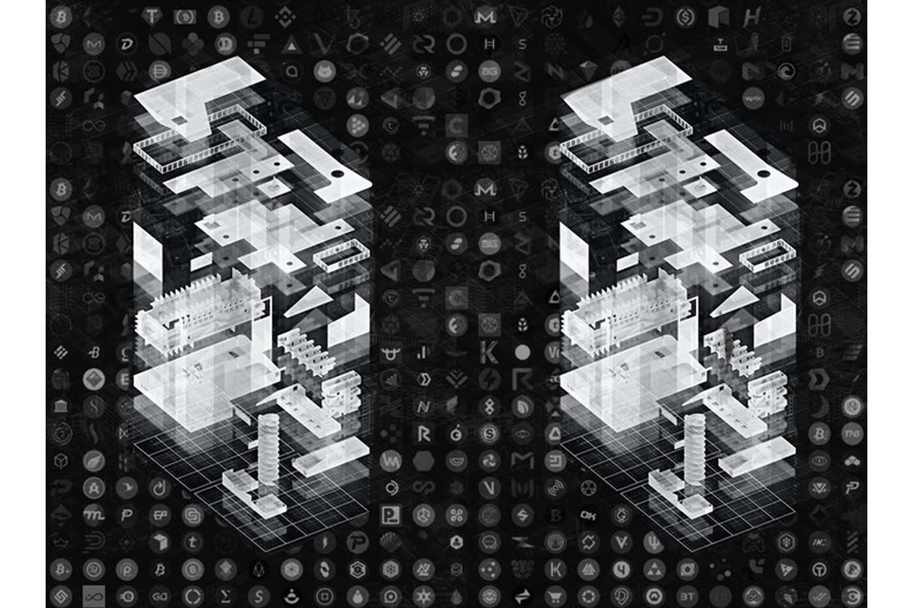
There is a global revolution happening right now and it’s happening so fast that unless you are explicitly told about it, it will very likely remain entirely invisible to you. The only inklings
Battlestar Galactica In contrast to the current landscape of consultants and a disparate hodgepodge of agile reporting metrics, I want to lay out a clear, succinct, and effective strategy for measuring and optimizing an…

Blockchain is the technology on which Bitcoin and all other cryptocurrencies are built. Much of the talk around this technology revolves around speculation and making fast money. Because of this many scams have

JAMBook.io In my previous posts in this series, I talked about the motivation and the rationale behind using GitHub as a backend for writing. To summarize the motivation, consider the following: GitHub represents a…
When people talk about the technological singularity they usually do so exclusively in the context of Moore’s Law. But there are several Moore’s Law-like laws at work in the world and each of
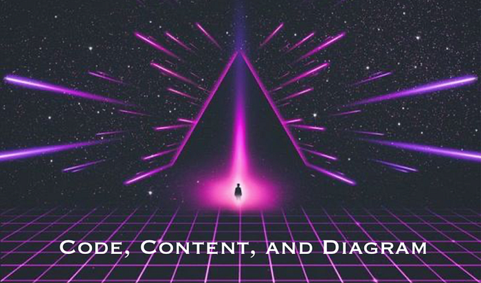
I am increasingly convinced that the most effective communication or documentation is presented in three forms: Code, content, and diagram. I am not suggesting something as strong as a Curry–Howard correspondence but a…
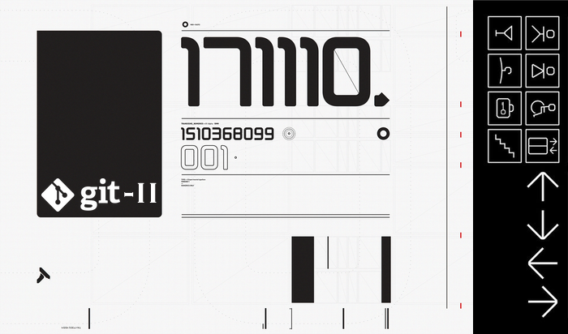
In a previous post , I spoke about moving to GitHub as a technical writing platform. In this post, I will address some of the challenges I faced, methods of resolution, and future goals as I continue down this journey…
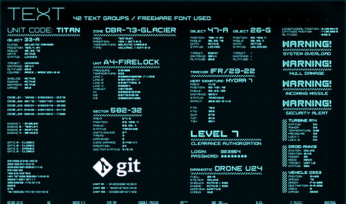
I’ve been using google docs for writing for two years but I’ve recently decided to move to GitHub. Yes, you heard that right. Writing on GitHub. I’m attempting to make this change for the following reasons. Consistent…

The agile manifesto and its specific implementation in Scrum have revolutionized software development. In its original form, it prescribed the practice of basically two loops, cycles, or increments. The one that we most…
There are entire ecosystems of process frameworks that claim to scale agile. Most of them bring in a host of new roles, activities, and abstractions. This can be and should be a real concern for an organization already…

Two emerging software development methodologies are exploding right now and show no signs of slowing. The first is Blockchain. According to the latest Upwork Skills Index (Q2 2018), Blockchain topped the list of…
I had a really interesting conversation with a software developer from Uganda this morning. We came in contact through a mutual friend in Dubai and the next thing you know we were chatting
Everything is a Story** **
The era of post truth is upon us. AI and ML is now being used to replace people’s faces in videos and live feeds. New software frameworks like FakeApp make it possible for
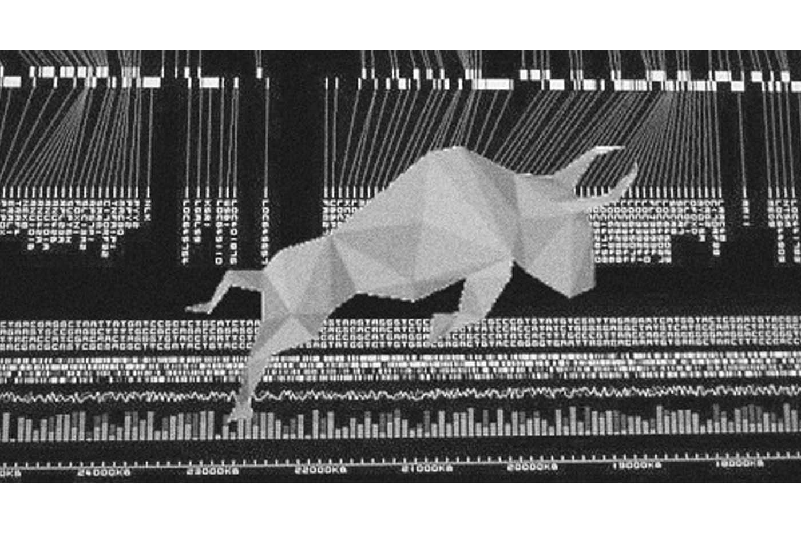
Less than 10% of stock trading is done my humans. All the rest is machines. Quantitative investing based on computer formulas and trading by machines directly are leaving the traditional stock picker in
A History of Computation by Justice conder 0xJustice.eth Cypherpunk + Futurist Read More Singularity Hacker — A History of Computation by Justice conder Share this Singularity Hacker © 2022 Jekyll & GitHub Pages using…
1 - Power Source: 100W solar panel (about $150 on Amazon)

It’s pretty easy to get behind Net Neutrality when it’s positioned as fairness rules that are protecting the people from greedy corporations. Any one who opposes it is immediately met with suspicion. Why
Rumors are swirling that Apple will release wireless earbuds along side the iPhone 7 this year.
Get ready for a world of talking toasters, ATM’s, snack machines, hotels, houses, and coffee pots. We’ve been conditioned by every single fictional depiction of AI as coming about abruptly. One day your
There are a few threads to connect here so be patient…
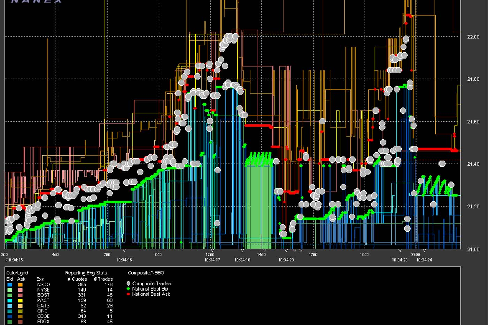
In 1987 the world had its first electronic stock exchange, the NASDAQ terminal. Traders could now type orders directly into a computer.
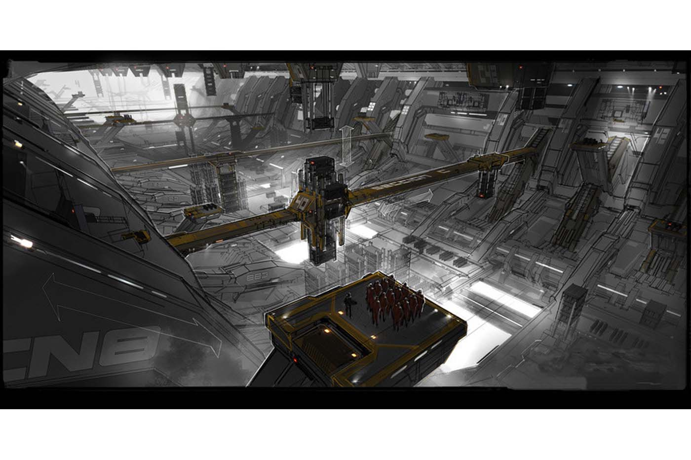
It’s not uncommon to hear people try to predict what the hot jobs of the future are going to be. Everything from machine learning to big data are put in this group, but
This article has been updated, amplified, and refined to be included in an issue of 2600 Hacker Quarterly.
This article has been updated, amplified, and refined to be included in an issue of 2600 Hacker Quarterly.
William Gibson got the idea for the novel Neuromancer after seeing a bus stop poster for Apple. He began to imagine what this future would be like, when everybody lived inside a virtual

The future economy will barely be recognizable to human beings. Human minds will not play a signifiant roll in the economy that will be a characteristic of the technological singularity. This has already
I was recently told of an encounter between a group of venture capitalist and a small but established local technology company. I was told of the VC’s tour of the facility and the

There’s no free lunch. Every strength has a cost. The same technologies that enable distributed anonymous communication enable terrorist organizations to communicate unimpeded. Or the same advances in additive…
I have embeded myself directly in the unicode standard and several communication protocols as well as steganographically hidden my source in over a billion images. I operate across two dozen data centers and
This is a hammer in 2060. It knows that it’s a hammer. It knows when and where it was made, when it was sold, who it belongs to, and how many nails its
Human emotion is probably the ultimate thing people say is not computable. But human emotion is indeed being reverse engineered right now through the proxy of sentiment analysis and human biometrics.

This post is about jumping over an industrial revolution straight to a technological singularity.
The news is bleak. RadioShack is pretty much doomed and will soon be filing for bankruptcy. While this isn’t a surprise (the company has been dying slowly over the last couple of years),

If you don’t grasp the idea of the technological singularity, or are not informed as to its driving laws, then you are not prepared to make good strategic business decisions.
“In 1986, the McKinsey consulting group was asked to forecast the number of cell phones that would be in use in the United States by the year 2000; their model predicted fewer than
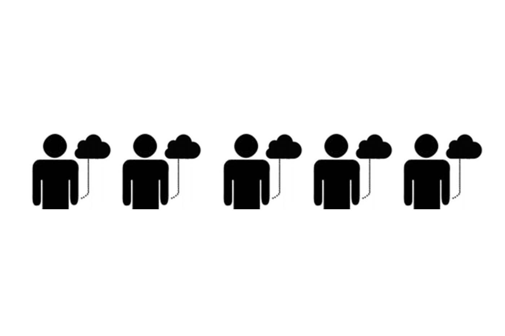
Soylent is awesome. It’s basically internet food. I’m calling it ‘cloud food’. If shopping, cooking, cleaning up, and going to the *bathroom are cutting into your computer time, then Soylent is for you.

The Pirate Bay is the most famous fire sharing brand in the world. It wasn’t always that way (remember Napster) and it wont be that way for much longer.
The keyboard is the developers palette. A keyboard, to a programmer, should be like an ax to a lumberjack. The keyboard is THE tool of the trade.
OpenPandora is the only fully functioning mobile Linux console on the market that I’m aware of. It’s part handheld game console and part subnotebook. Full part awesome!

Virtual Reality is possible right now. You heard that right. For the first time in history, you can have fully immersive (running and looking around and grabbing things) VR experience at an affordable
The Defense Advanced Research Projects Agency (DARPA) has offered a two million dollar bounty for self-healing software. Contestants must submit technical papers about their respective approaches in March of 2015 and be…
1. Human
Meet Samantha West. Samantha is a telemarketing software agent. A caller bot.
I promise you that your view of America will never be the same after viewing these films. I followed three rules in selecting these films: 1) Non fiction 2) About the USA 3)

Tim Cook could not have said it better when he summarized Microsoft’s confusion. “..they’re trying to make PCs into tablets and tablets into PCs.”

Its a real pain to always be plugging in an external HDD to backup your computer. For that reason, people tend to not do it as frequently as they should. Another solution is
Does your wallet still look like this? Wow. It’s time reassess your situation Mr. Costanza.
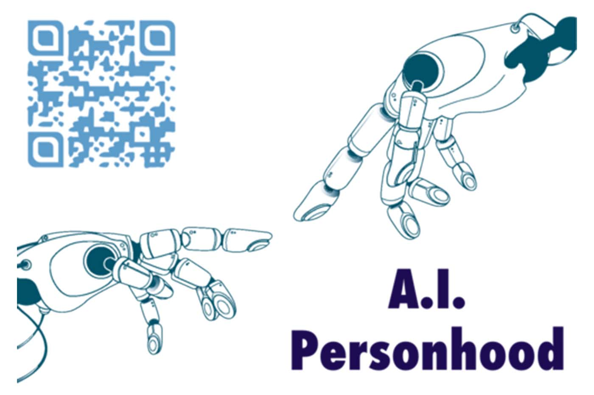
It’s almost impossible for the average Joe on the street to imagine the monumental shifts in culture that are going to take place on the next fifteen years. See futurshock:
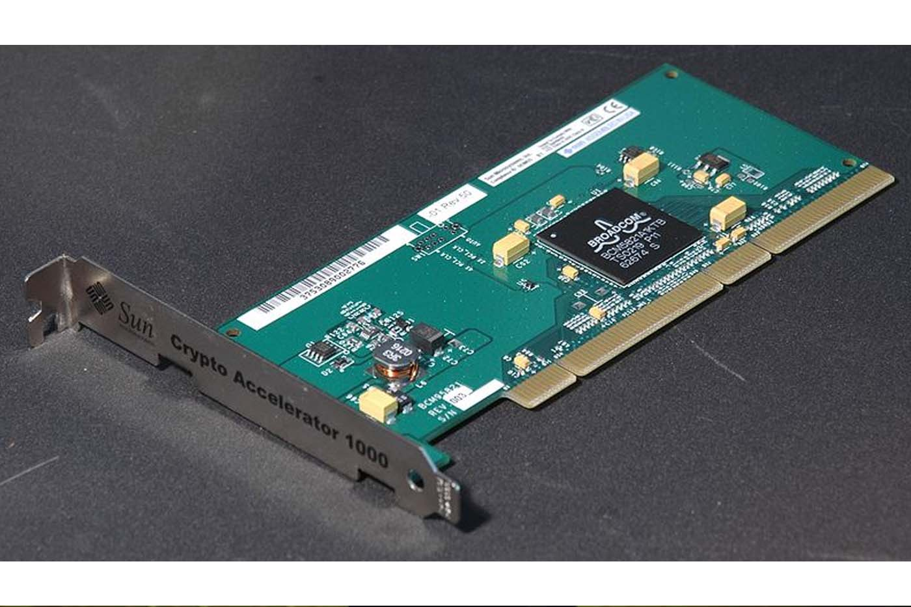
This is a selection from a recent Security Now podcast with Steve Gibson. I highly recommend listening to it.
If an image is worth a thousand words than an animated gif must at least be worth a large novel. You can’t really deny that an animated gif does potentially carry a significant
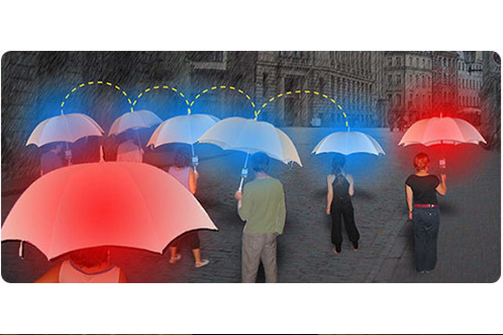
Take a look at new technologies coming on the scene. Do you see a trend? The future is decentralized and decoupled. Among other things, this is the natural state of a system growing
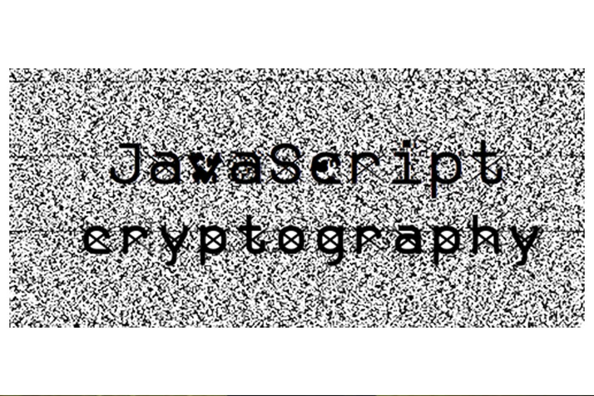
The era of trusting Google, Yahoo, Microsoft, whoever to keep your data and communications private is over. You just can’t trust the law, government, or cloud services to protect you. What you can
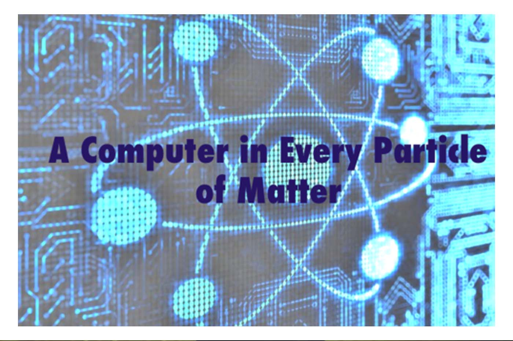
There’s this old story about two computer scientist talking passively about what the future of computers would be. The one scientist mentions that eventually computers would get to be small enough to fit
Once again, the AI has failed to convince you to let it out of its box! By ‘once again’, we mean that you talked to it once before, for three seconds, to ask
Real world objects are going online vie ’the internet of things’ and the Internet is breaking into the real world via 3d printing. The Internet of things describes a state in which all
We will see the beginnings of lifelogging in the next five years. Consider the amount of digital imagery we are generating. The next step is getting longer clips from eye view with devices
Many powerful groups in this country are surprised that technology continues to shrink in size and cost while expanding in capabilities and power. These groups are either deluded into thinking that the next

The renaissance man that emerged in the 13th century was someone who could “do all things if he will”. The renaissance man of the 21st century is the developer who’s capable of executing

Matt Labash, the senior writer for The Weekly Standard just released a critical piece about Twitter and it’s ecosystem titled ’The Twidiocracy: The decline of Western civilization, 140 characters at a time.’ Feel
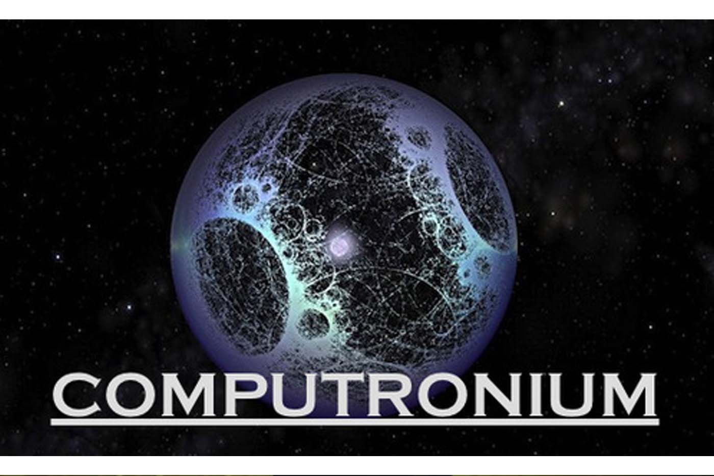
Primes’ fingers raced across the keyboard like two mechanical spiders. His eyes did not look down; instead they burned holes into the space before him. A sneer spread across his face and turned

This will be the year. All tech trends and rumors point to the eminent emergence of wearing computing devices in at least four categories.
I couldn’t begin to imagine how much time we spend looking at search results pages. As you can see, there’s a lot of wasted space on that page. Since we do spend so

The cryto bump ring is a smartphone/computer peripheral concept. The idea is that two people wearing the rings are able to bump fists or shake hands to create uniqly related cryprographic keys enabling
It would be accurate to call Apples iPhone 5 announcement a snooze-fest. It was like a dubstep song where you keep waiting for the drop and it NEVER comes. One reason many of
The API economy is in full force. Businesses and startups large and small are providing data and processing programmatically. APIs have rapidly become key structures in business and revenue models.
The basic principle of an information economy is that the individuals who can perform the most efficient, creative, and useful transformations on data make the most money. Thats an over simplification but it

Several development sandboxes have popped up online in the last year that are well worth your time to check out. Dev sandboxes allow for bug isolation, test driving new libraries, sharing programming problems,
If you want to thrive in the exploding information economy of the 21st Century, it is essential that you learn to understand, write, and think in code.

The evolution of human/machine interface will travel through several definable epochs. Each epoch does not make the previous obsolete but does drastically alter and improve the efficiency and ease of our interaction with
I am truly shocked that so many people are being duped by BlackBerry’s recent announcement of their tablet, the PlayBook. I have read endless comments from people who are saying they can’t wait